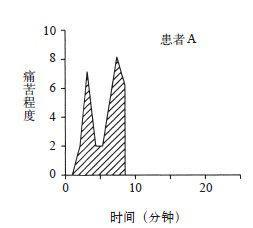
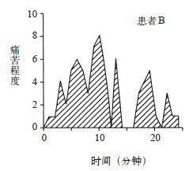

如何测量体验效用？
我研究体验效用和决策效用之间可能存在的差异性已经有很长的时间了。当我和阿莫斯致力于前景理论研究的时候，我设计了这样一道测试题：假设某人每天都要接受一次痛苦的注射。原计划注射20天，现减至18天，请问人们对这种减少的感觉与从6天减少到4天一样吗？
若不一样，你能说出理由吗？
我没有收集结果数据，因为结果很明显。你也可以自己验证一下，若能将注射天数减少1/3（即从6天减到4天），而不是1/10（即从20天减到18天），人们往往愿意付出更多。在第一种情况下避免两次注射的决策效用要比在第二种情况下大，并且相较于第二种情况，人们都愿意为第一种情况付出更多。但是，这种区别是荒谬的。如果痛苦每天都是一样的，则按应该注射的次数而言，为两种减少的注射量分配不同的效用又有何道理呢？用我们今天的话说，这个测验题告诉我们：体验效用可以用注射次数来衡量。而且，至少在某些情况下，体验效用可用做评估决策的标准。决策者若想得到同等的体验效用（或免于遭受同样的损失）却分配出不同的效用是种错误。你可能会发现这种情况很明显，但是在决策理论中，判断决策是否错误的唯一标准就是看这个决策和决策人的其他偏向是否一致。我和阿莫斯一起讨论了这个问题，但是我们没有深入研究。多年以后，我又开始思考这个问题。
怎样衡量体验效用？怎样回答像“在治疗过程中，海伦承受了多大的痛苦”或者“她在沙滩上待了20分钟有多享受”这样的问题？英国经济学家弗朗西斯·埃奇沃思（Francis Edgeworth）早在19世纪就对此类问题作了推测，并提出发明“快乐测量仪”的想法，这种仪器可衡量出一个人所经历的快乐或痛苦的大小。
体验效用是会变化的，就像每天的温度或气压那样，其结果将被绘制成时间函数。海伦在治疗过程中或休假期间经受了怎样的痛苦或快乐就像是“曲线下的区域”。时间在埃奇沃思的构想中起到了关键的作用。如果海伦在沙滩上待了40分钟而不是20分钟，并且她很享受，则此时她的总体体验效用就会翻倍。就像注射次数加倍会使治疗时注射的痛苦翻倍一样。这就是埃奇沃思理论，现在我们对于他的理论的构建情景有了更准确的理解。
图15是我和唐·雷德梅尔（Don Redelmeier）为一项研究而设计的，是关于两名病患经历的痛苦的结肠镜检查数据。雷德梅尔是多伦多大学的医生和研究者，早在20世纪90年代，他就将这项实验提出来了。现在，做这个手术时常会辅用麻醉药物和健忘症药物，但是在我们收集数据时，这些药物还未被广泛应用。实验中，每60秒我们就要求这些患者说出他们当前的痛苦程度。这些数据用一个范围的值来表示：零表示“没有任何的痛苦”，10表示“无法忍受的痛苦”。正如你可以看到的，在此过程中，每个患者的体验有很大的改变，患者A的体验持续了8分钟，患者B持续了24分钟。（过程结束时记录的数据则为零）。此实验共有154位患者参加，最短的过程持续了4分钟，最长的有69分钟。


图15
接下来请思考一个简单的问题：假设研究人员使用相似的疼痛范围值对两位患者的疼痛感进行测量，哪一位患者的疼痛感更强呢？无可争议，人们普遍认同患者B会承受更大的痛苦。痛苦程度相同时，患者B不会比患者A所承受的时间短，对于B来说，“曲线下的区域”显然比A的要大。当然，关键因素是B的痛苦过程持续时间更长。这些测量数据都来自瞬时疼痛的“快乐测量值”。
当实验结束时，我们要求受试者评估整个过程中感受到的“痛苦”。图中的文字是为了帮助受试者回想他们感受到的全部痛苦，以及进而产生的快乐测量值。令人惊讶的是，患者没参加过类似的实验。统计分析揭示了两个结果，解释了我们在其他实验中观察到的模式：
·峰终定律（peak-end rule）①：整体的回顾性评级可通过将最糟糕时期和最后时刻的疼痛程度的平均加权而评估出来。
·过程忽视（duration neglect）：过程的持续对所有疼痛的评估没有任何影响。
现在你可以将这些规则应用到患者A和患者B的情况中。最糟糕的评估（8~10）对这两位患者来说是相同的，但患者A在过程结束前的最后评估是7，而患者B只是1。因此，对于患者A来说，峰终的平均值是7.5，而患者B只有4.5。正如预期的那样，患者A在此期间比患者B更痛苦。对于患者A来说，结束时也是个糟糕的体验，这真的很不幸，完全没有愉快的记忆。
我们现在陷入了困境：测量体验效用有两种方法，即快乐测量值和回顾性评级，但这两种方法从系统角度而言是不同的。快乐测量值是有观察员从他人不同时刻的体验报告中计算出的数据。我们将这些判断称为过程—权衡，因为在计算“曲线下的区域”时，对各个时刻都作了相等的权衡：在疼痛强度为9时，两分钟的疼痛是一分钟的两倍。然而，本实验和其他研究的成果表明，回顾性评级对过程并不敏感，而且，相比于其他时刻，回顾性评级会权衡两个单一时刻，即高峰和末端。所以，哪一个更重要呢？医生应该怎样做呢？这种选择对医疗实践有所启示，我们注意到：
·如果目的是为了减少患者的痛苦记忆，那降低最为疼痛时的疼痛感就比将疼痛的过程减到最短更为重要。同样的道理，如果患者在过程结束时感到的疼痛相对较轻，他对此过程的记忆就会更好，那么逐渐减轻疼痛比急剧减轻更可取。
·如果想减少实际体验到的痛苦，迅速完成这个过程或许更合适，即使这样做会让患者更疼痛并给患者留下可怕的记忆。
你认为这两个目标哪一个更好？我没有作调查，但我认为会有很多人选择痛苦记忆较少的那个。我觉得将这种困境看做是两个自我之间的利益冲突会更容易理解一点（这与我们所熟悉的两个系统不符合）。经验自我是回答“现在疼吗”这种问题的，而记忆自我则是回答“总体如何”这种问题的。我们只有通过记忆才能保存生活体验，因此，在我们思考生命时，唯一能采取的观点来自于记忆自我。
我曾作过一个关于将记忆和体验区分开的困难的演讲。结束后，我听到了一名观众的评论。他说聚精会神地听唱片中的交响乐时，由于光盘有刮痕，快结束时产生了令人厌恶的声音，糟糕的结尾往往“毁了全部的体验”。但实际上毁的并非是体验，只是对它的记忆而已。经验自我几乎有了完美的经验，糟糕的结尾并不能将其抹去，因为这种体验已经发生了。这位听众将整个体验定义为失败，就因为它的结尾很糟糕，但他却忽略了40分钟的音乐带给他的快乐。实际体验真的毫无价值吗？
混乱的体验以及对此体验的记忆是种认知错觉，而对这种体验的替代让我们相信过去的体验是可以被消除的。经验自我无法表达自己的感受，记忆自我有时又是错的，但记忆自我可以记录体验，并掌控我们从生活中学到的东西，而决策也正是由这个自我做出的。我们从过去的经验中学到的就是储存记忆，这么做未必是为了未来的体验。这就是记忆自我的专制性。